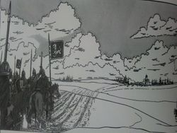

De: La Frikipedia, la enciclopedia extremadamente seria.
De: La Frikipedia, la enciclopedia extremadamente seria. De: La Frikipedia, la enciclopedia extremadamente seria.
| De la serie imperios antiguos: | |||||
| Imperische Austrelich Chungoh | |||||
| |||||
| Lema: Strasse | |||||
| Himno: Larga vida al salchichonen!
| |||||
| 
| |||||
| Capital(es) | Viena. | ||||
| Mayor ciudad | Budapest. | ||||
| Lenguas oficiales | alemán,húngaro,checo,eslovaco,turco,serbio,macedonio,gallego. | ||||
| Religión oficial | Cristianismo islamico(mayoría sunita). | ||||
| Gobierno | Monarquía militarista e imperialista | ||||
| Emperador archiduque de todas las austrias. | Franz Ferdinand. | ||||
| Fecha de fundación | 1848 | ||||
| Caída | 1918. | ||||
| Edad de oro | Finales del siglo XIX. | ||||
| Periodo de Estancamiento o reseción | 1909-1918. | ||||
| Máxima Extensión | actuales Austria,sur de Polonia,República Checa,Eslovenia,Serbia,Croacia,Ucrania y parte de Italia. | ||||
| Forma de economía | La exportación de salchichas. | ||||
| Estados que se despacho | Polonia,Ucrania,checos,eslovacos,los Balcanes,norte de Italia. | ||||
| Población calculada | Muchos austrúíacos, más eslavos, algunos critianos islamizados, unos gallegos y casi ningún turco. | ||||
| Moneda | | ||||
| Zona horaria | UNa,grande e imperialista | ||||
| Legado(s) | el vals. | ||||
| ¿Por que se vino abajo? | Cruz Roja Internacional... | ||||
| | |||||
El Imperio austrohúngaro, o Imperio Austro-Húngaro, fue un gobierno dictatorial sobre varias naciones europeas a finales del siglo XIX y principios del XX que provocaron la Primera Guerra Civil Europea.
Cuando la Dinastía Habsburgo vio que que el Imperio Ruso ya no le iba a ayudar contra los húngaros, y tras perder la guerra contra Prusia decidieron ser todos amigos y poner lado del nombre Imperio Austriaco el de húngaro, para que éstos dejasen el nacionalismo, al tiempo que le regalaban a los nobles húngaros más tierras y varios uniformes cuajados de medallas.
Como el territorio estaba ocupado por 11 culturas distintas el imperio no duró mucho, tras las derrotas del Cruz Roja Internacional, que luego s ele iría de las manos) para que Serbia dominase Bosnia a base de enviar al Otro Mundo a los mandamases austríacos; tras varios intentos, uno de sus agentes pudo matar al archiduque Franz Ferdinand con un bocata de mortadela con aceitunas(a alas cuales el austríaco era alérgico), días más tarde del asesinato Serbia no pudo hacerse con Bosnia, pero sí con un ataque del Imperio Austrohúngaro, al que se sumó Alemania, y luego vino el Imperio Ruso en plan:"Dejad de meteros con Serbia¿Porqué no os metéis con uno de vuestro tamaño?", luego después del Zar vino el Imperio Francés,el Imperio Británico y el Imperio Portugués, se había liado la Primera Guerra Mundial!
Un par de meses antes y viendo que iban a perder y encima tener que pagar los platos rotos, el Imperio abandonó la guerra dio la libertad a las nacionalidades que oprimía(Checos,eslovacos,Croacia) e dióle unas finquitas de nada a Italia.Actualmente lo único que queda de él son los valses en Viena(Austria).
Su método de ingresar dividendos era mediante los impuestos a campesinos y explotar a los obreros, de tal forma que Austria daba el 70% del presupuesto a la hacienda común del imperio(a pesar de ello Hungría era como Catalunya y sólo hacían pedir más y más e imponer el idioma húngaro a las minorías polacas,checas,croatas...), había pleititos por los impuestos a las importaciones, así como con qué lengua se debería habar en el ejército común, que horas estaban destinadas a los rezos oficiales(ya que mezclaban la religión con el estado y así les iba), o cuanto tiempo debían estar las salchichas al fuego, así como el diámetro de las faldas para bailar valses.
El producto estrella de la exportación fueron las muñecas de música, vestidas a lo princesa Disney pero de porcelana, con un mecanismo de reloj que las hacía girar sobre sí mismas mientras sonaban grandes clásicos d ela música como "Smoke in the water","Opá yo vi hasé un corral" o "Booomba!".
Destacan los montes Cárpatos(ande vive el conde Drácula), la penillanura austríaca, antesala de los Alpes austríacos, la llanura polaca de Cracovia y el río Danubio, que atraviesa todo el imperio y más allá y sirvió como lugar de industrialización de carbón vegetal y petróleo scado d elos montes donde vagó el Fragasaurio en el Pleistoceno.
Los únicos fueron a principios de la Primera Guerra Mundial, y ni siquiera ahí montaron grandes escabechinas, excepto en el bombardeo de Belgrado y hacer que el antisemitismo fluyera un poco más en la frontera con Alemania, donde nacería Hitler.
Autor(es):